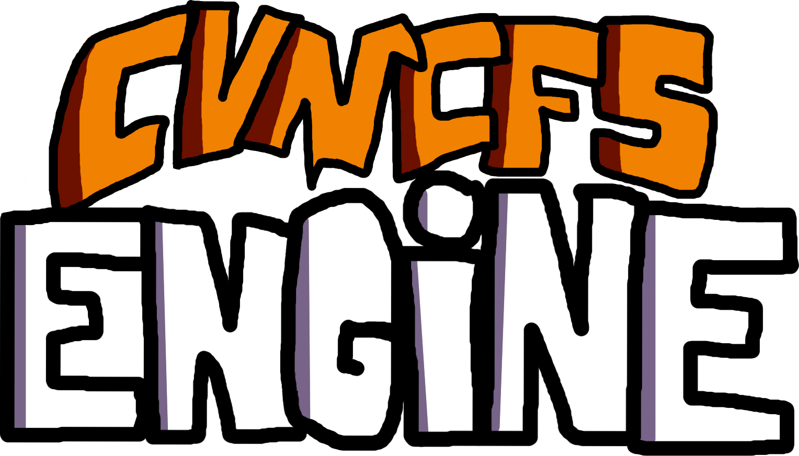

Olá! Eu sou o Cvncfs! Sou muito viciado em jogar Friday Night Funkin' (Além disso eu sou um Modder V-Slice).
Como eu jogo mais com o celular e não no computador, tive que me adaptar para a V-Slice, que é o sistema de mods que funciona tanto em Mac OS, Windows, Android e iOS. Então eu fiz alguns sites que você, Modder V-Slice, possa gostar!